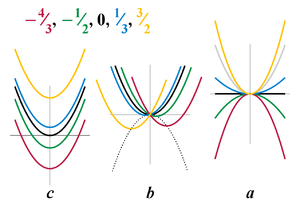
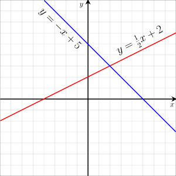

In elementary algebra, a quadratic equation (from the Latin quadratus for "square") is any equation having the form ax 2 +bx+c=0 where x represents an unknown, and a, b, and c represent known numbers such that a is not equal to 0. The numbers a, b, and c are the coefficients of the equation, and may be distinguished by calling them, respectively, the quadratic coefficient, the linear coefficient and the constant or free term. Because the quadratic equation involves only one unknown, it is called "univariate". The quadratic equation only contains powers of x that are non-negative integers, and therefore it is a polynomial equation, and in particular it is a second degree polynomial equation since the greatest power is two. Quadratic equations can be solved by a process known in American English as factoring and in other varieties of English as factorising, by completing the square, by using the quadratic formula, or by graphing. Solutions to problems equivalent to the quadratic equation were known as early as 2000 BC.
The quadratic equation ax^2+bx+c=0 has the solutions
X = -b +(-)sqrt(b^2-4ac)/2a

Plots of quadratic function y = ax2 + bx + c
varying each coefficient separately while the
other coefficients are fixed.
(at values a = 1, b = 0, c = 0)
A linear equation is an algebraic equation in which each term is either a constant or the product of a constant and (the first power of) a single variable. Linear equations can have one or more variables. Linear equations occur abundantly in most subareas of mathematics and especially in applied mathematics. While they arise quite naturally when modeling many phenomena, they are particularly useful since many non-linear equations may be reduced to linear equations by assuming that quantities of interest vary to only a small extent from some "background" state. Linear equations do not include exponents. A linear equation in one unknown x may always be rewritten ax=b. If a ≠ 0, there is a unique solution x=\frac{b}{a}. If a = 0, then either the equation does not have any solution, if b ≠ 0 (it is inconsistent), or every number is a solution, if b is also zero.
